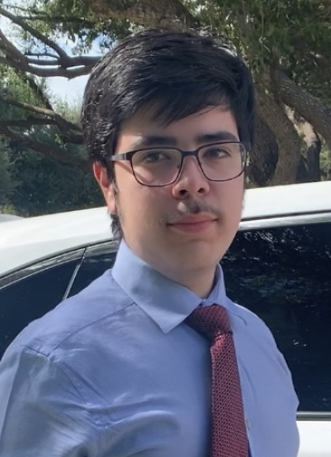

My name is Luis Alejandro Almanza Jr.; I'm currently a junior Computer Science undergraduate student at Texas A&M University minoring in
Game Design and Development. As such I'm particpating in the Texas A&M Game Developers organization, the Aggie Coding Club, and in Texas A&M's
chapter of the Society of Professional Hispanic Engineers (SHPE).
I'm proud to call Laredo, Texas my lifelong home due to being able to grow up in a culturally enriched community. Ever since I was young, I've always been
facinated with computers but I wasn't quite sure what about them tickled my brain so much.